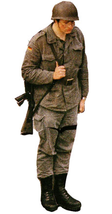

|
SIYOUNG KIM
Entdeckungsreise | 2009 | 5'
Format: DV
Militäreinsatz stellt heutzutage und auch in der Zukunft weltweit als ein legitimes Mittel zur Lösung der Probleme dar. Der Soldat spielt dabei eine wichtige Rolle. Er muss allerdings sein Personsein als freies Wesen aufgeben, um ein guter Soldat sein zu können.
Diese Filmarbeit befasst sich mit dieser Problematik. Ein Soldat begibt sich auf eine Weltreise und kommt mit verschiedenen Kulturen in Kontakt. Er kommt wieder zurück zum Einsatz. Bleibt er als der alte Soldat oder hat die Entdeckungsreise ihn verändert?
Siyoung Kim, geb. 1976 in Berlin, lebt und arbeitet seit 1999 in München.1999 Studium der Malerei, Cho-Sun Universität, Korea (BFA). Bis 2007 an der Akademie der Bildenden Künste München bei Prof. Axel Kasseböhmer.
Ausstellungen (Auswahl): 2007 | "Fata Morgana", Galerie Goethe 53, München | "Fotosommer Stuttgart 2007", Württembergischer Kunstverein, Stuttgart | "Spots", project Ac/rT, CINEMA Gwangju, Korea | 2008 | "Zimmerfrei", Hotel Mariandl, München | "Zeitgenössische Kunst am Wittelsbacherplatz", 850 Jahre München | "kunst im bau", München | 2009 | Platform3, open studio, München | "log in", Okgwa Museeum, Korea | "be water, my friend", Kunstarkaden, München
zurück
|